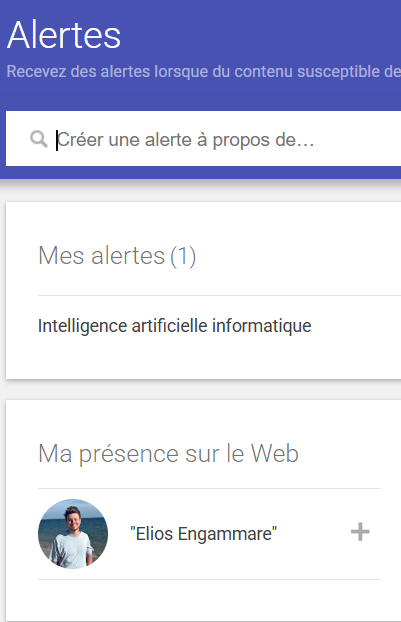
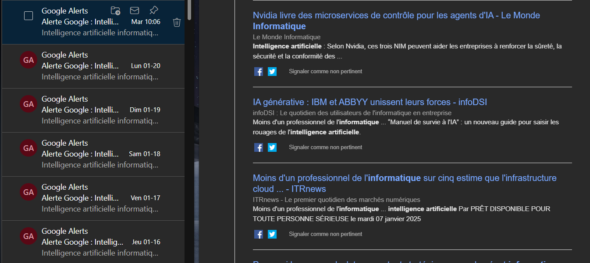
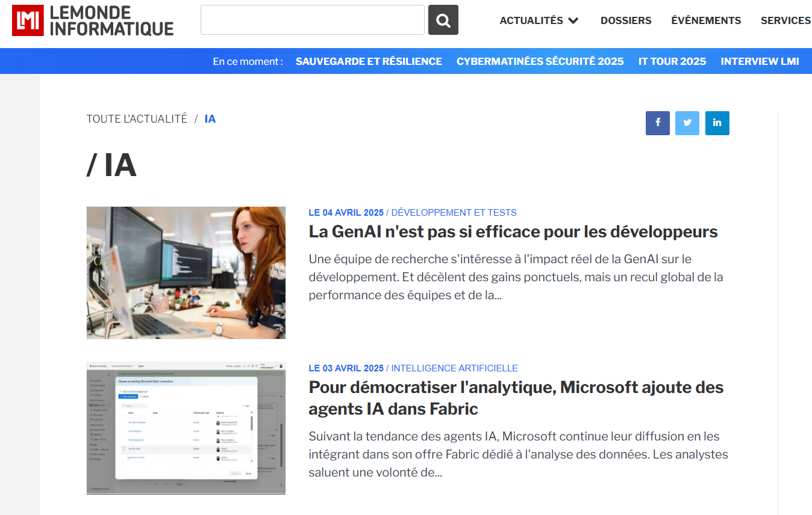
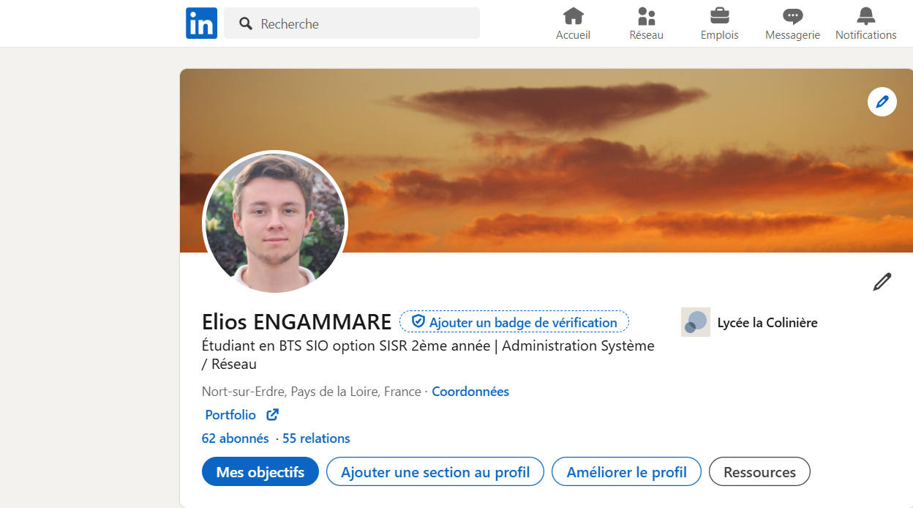

Résumé de la compétence
Le développement professionnel continu est essentiel pour s'adapter aux évolutions technologiques et renforcer ses compétences. Au cours de mes stages, notamment chez Sigma et chez Diff-info à Nort-sur-Erdre, j'ai eu l'opportunité de travailler sur divers aspects liés à l'organisation de mon développement professionnel. Ce rapport décrit les actions menées pour améliorer mes connaissances techniques, élargir mon réseau professionnel et approfondir mes compétences grâce à un apprentissage pratique.
Mettre en place son environnement d’apprentissage personnel
- - Configuration et gestion d'un serveur personnel pour tester des environnements de virtualisation et de nouvelles technologies
- - Expérimentation de divers scénarios issus des travaux pratiques réalisés en cours
- - Documentation régulière des étapes pour faciliter les apprentissages futurs et renforcer mes compétences en autonomie
Mettre en œuvre des outils et stratégies de veille informationnelle
- - Réalisation d'une veille active sur l'intelligence artificielle et son intégration en entreprise
- - Suivi d'actualités technologiques via des plateformes spécialisées comme LeMondeInformatique, LinkedIn, et des newsletters techniques telle que google alert



Gérer son identité professionnelle
- - Création et maintien d'un profil LinkedIn détaillé, mettant en avant mes compétences, projets et expériences professionnelles
- - Partage régulier de posts et articles pertinents pour renforcer ma visibilité et mon réseau professionnel
